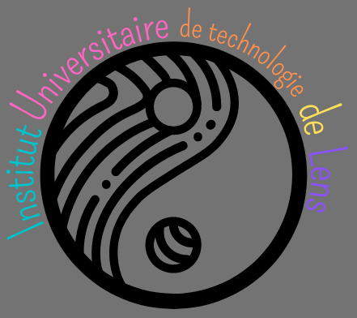

Ce site a été réalisé du début à la fin par mes soins.
J'ai refait le logo de l'iut en gardant les mêmes couleurs que le logo originel.
J'ai choisi le symbole du yin et du yang parce que leur opposition sert aussi de complémentarité, même si ils sont de couleurs opposées, ça ne les empechent pas de se complémenter.
Comme les departements info et comm qui n'ont pas les mêmes formations arrivent à se complémenter et on obtiens le departement MMI

Voici mon propre logo
La boule qui est pechée est un de mes dessins